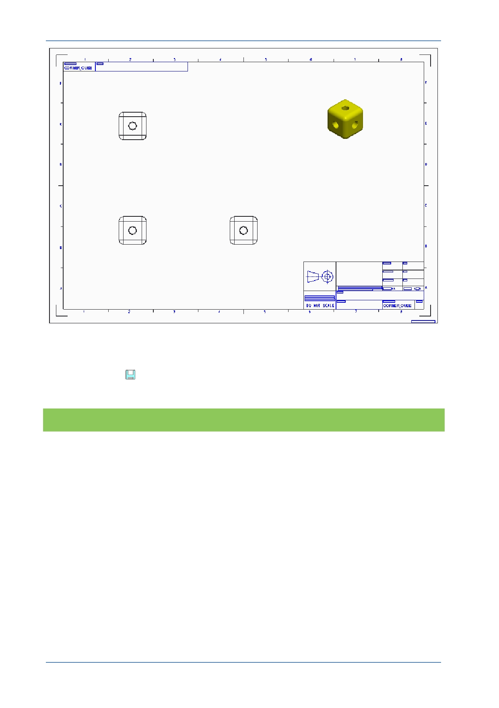

PTC Academic Program
The template has saved you a great deal of work by creating borders, title blocks and
the different views. Typical changes you may want to make include the scale of the
drawing and adding dimensions and annotations.
Click Save
to save your work.
What have you learned?
Opening an existing component.
Starting a new drawing - paper size and template.
Template – borders, title blocks and views.
© 2012 PTC
Creo Parametric 2.0 Primer
Page 92